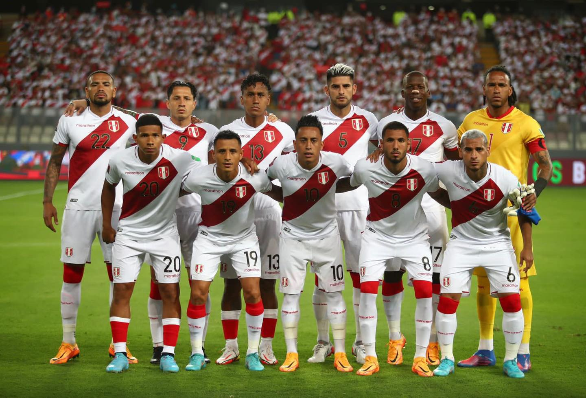

La selección de fútbol del Perú, también conocida como la Bicolor y la Blanquirroja,8910 es el equipo representativo de dicho país en las competiciones oficiales de fútbol masculino. Su organización está a cargo de la Federación Peruana de Fútbol (FPF), creada en 1922, una de las diez federaciones miembro de la Confederación Sudamericana de Fútbol (Conmebol), al cual se afilió en 1925. Participa en las competencias organizadas por la Conmebol y la FIFA. Su debut se produjo el 1 de noviembre de 1927 ante la selección de Uruguay en el Campeonato Sudamericano de aquel año realizado en Perú.111213 La selección peruana juega sus partidos de local en el Estadio Nacional, ubicado en la capital del país,
BRASIL - ARGENTINA - COLOMBIA - URUGUAY - VENEZUELA - PARAGUAY - PERÚ - CHILE - ECUADOR - BOLIVIA
